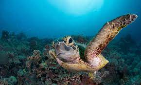

Brief history on the beginning of Marine Biology:"The modern day study of marine biology began with the exploration by Captain James Cook (1728-1779) in 18th century Britain. Captain Cook is most known for his extensive voyages of discovery for the British Navy, mapping much of the world’s uncharted waters during that time."-marinebio.org. More details can be found in the bar up top!
High School courses needed to apply for a Marine Biology programs in Canada: 3 sciences (Physics,Chemistry and Biology), Advanced Functions, Pre-Calculus and English. (More info in the menu)
Lastly, you don't have to become a Marine Biologist and work with animals hands on. There are many different careers in Marine Biology like Marine Mammal Scientist, Marine Researcher, Marine Environment Educator/ Oceanography and many others that can be found in the menu!
Slide the slider to indicate how interested you are so far!